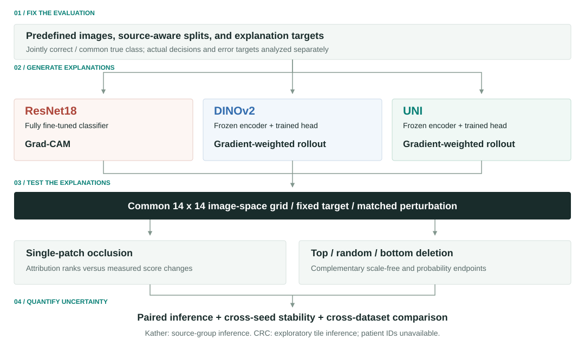

COLorectal histology / explanation auditing
Patch-deletion lab
A heatmap is a hypothesis about a model. Test what happens when its highlighted regions disappear.
Educational toy model. No patient images, pathology predictions, or study results are displayed below.
Teal: positive weights. Coral: negative weights. Gray: zero weights.
Highest-ranked patches replaced with zero.
Deletion response
- Top
- Random mean
- Bottom
Lower remaining score means more damage to this target. Random: mean of 20 seeded deletion orders.
Current intervention
- Original target logit
- --
- Remaining target logit
- --
- Target-logit drop
- --
- Map / occlusion Spearman
- --
Toy-model definition and limits
Fixed target: an illustrative binary-class logit, not a tissue label.
z(x) = -0.8 + Σj wjxj τj = z(x) - z(x with xj = 0) = wjxj
Each synthetic patch has an intensity x and a fixed signed weight w. Positive effects support this target; negative effects inhibit it. The faithful map equals the exact single-patch effect. The misleading map is a spatial bump independent of the scoring weights. Both are ranked as signed scores, with patch-index tie breaking. Spearman uses average ranks for ties.
Deletion orders are fixed before removal; the model weights and target never change. Random orders are shared across the two maps. The slider rounds to the nearest whole patch. The additive toy has no feature interactions: it illustrates the test, not the behavior or performance of ResNet18, DINOv2, or UNI. The map colors show ranks, not calibrated effect magnitudes. The CSV contains all 197 deletion steps, including the unperturbed input.
THE ACTUAL STUDY
Generate an explanation. Then audit it.
Three model-training-explanation pipelines, evaluated with complementary perturbation tests.

Kather-5K
Source-grouped out-of-fold evaluation. Training seeds quantify training variability, not independent patients.
CRC-VAL-HE-7K
External transfer on seven harmonized classes. No tile-level patient IDs; tile-bootstrap intervals are exploratory.
Interpretation
Modest, tissue- and metric-dependent faithfulness. Highlighted regions contribute to model predictions, not biological causation.
FROM CLAIM TO CHECK
An inspectable analysis trail
Reproduce the tables without images or weights
python scripts/verify_publication.py
python scripts/prepare_local_artifacts.py
Rscript environment/install_reporting_packages.R
Rscript analysis/feedback2_analysis.RDATA ACCESS
Original datasets and alternative downloads
Kather-5K
5,000 tiles · 150 × 150 pixels · eight tissue classes.
Original Zenodo release
Kaggle: Colorectal Histology MNIST
Archive: Kather_texture_2016_image_tiles_5000.zip
CRC-VAL-HE-7K
7,180 tiles · 224 × 224 pixels · nine source classes.
Original Zenodo release
Kaggle: CRC-VAL-HE-7K
Archive: CRC-VAL-HE-7K.zip. NCT-CRC-HE-100K is not required.
Reproduction notes
The external analysis uses 6,588 tiles mapped to seven classes. Cite the original creators. Kaggle and Zenodo copies have not been verified as byte-identical.
The interactive demonstration above remains entirely synthetic and loads no dataset images.